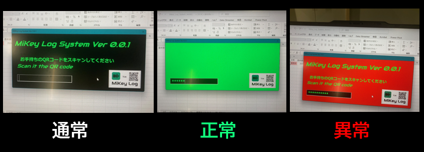
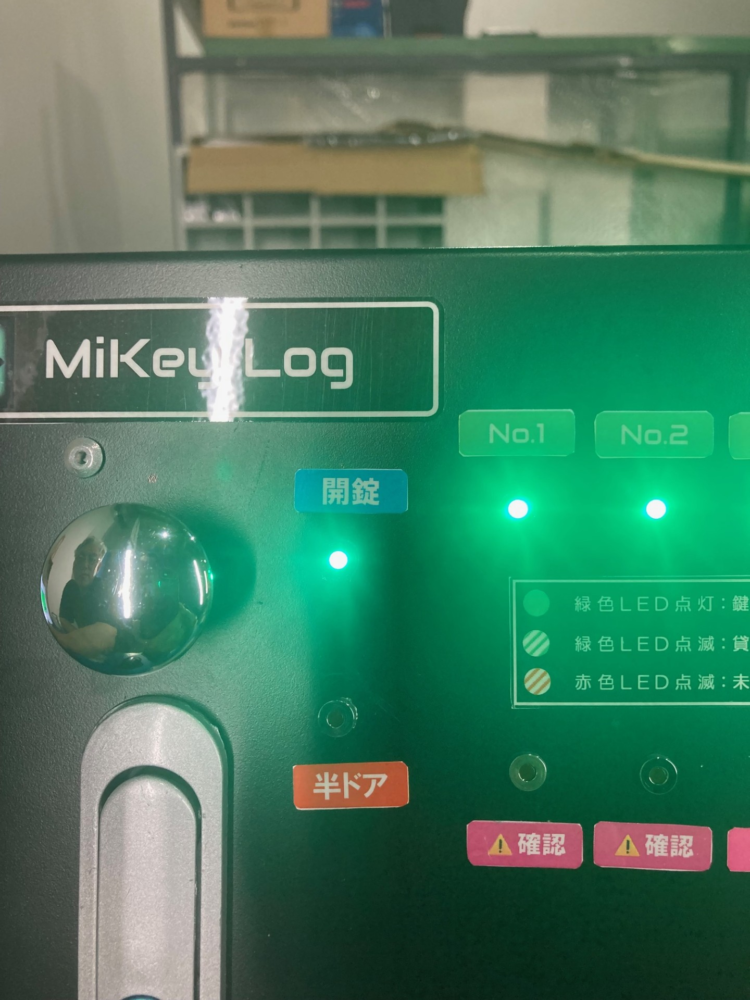
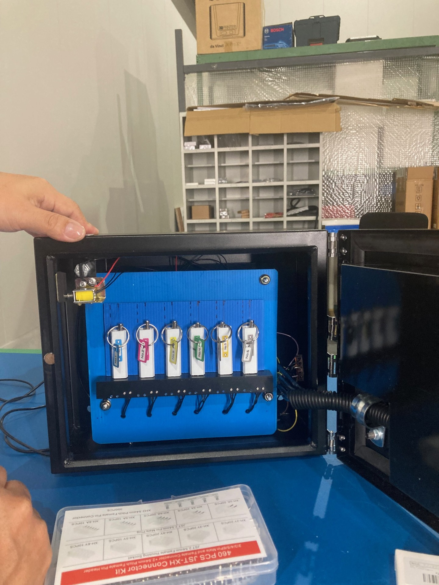
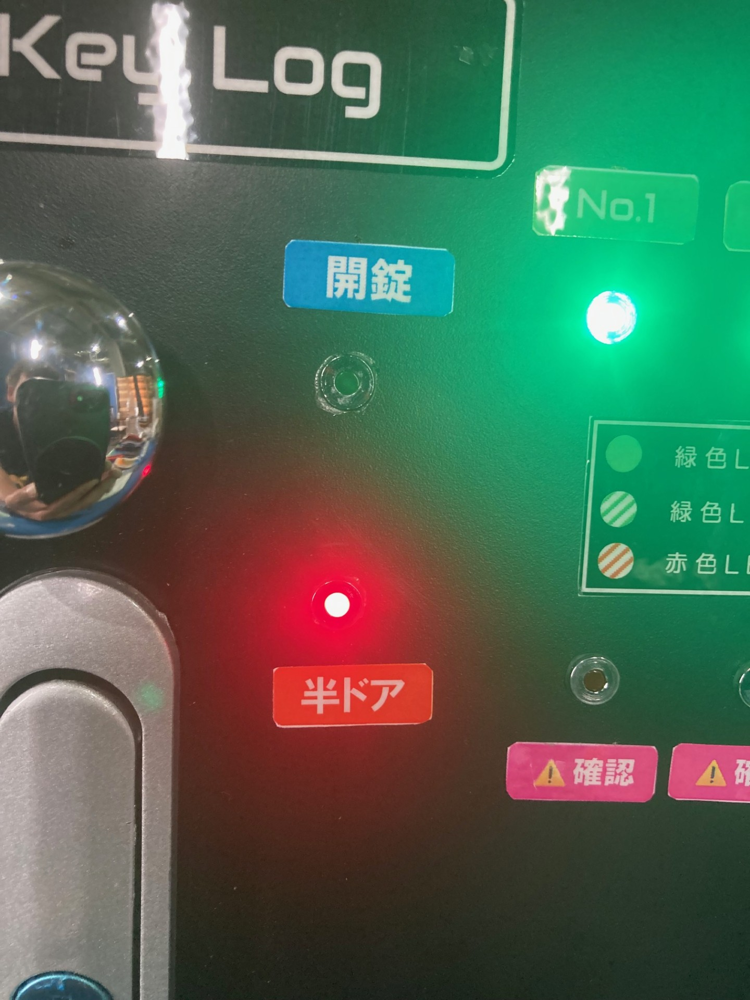
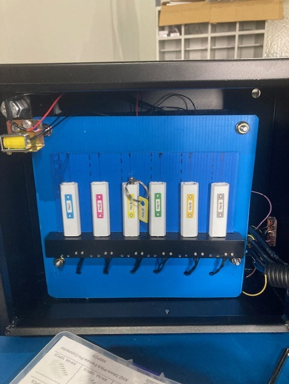
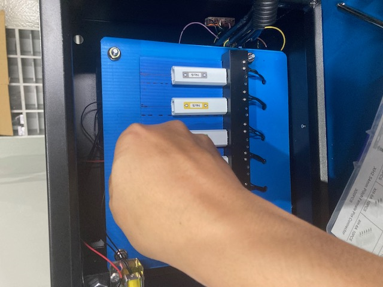
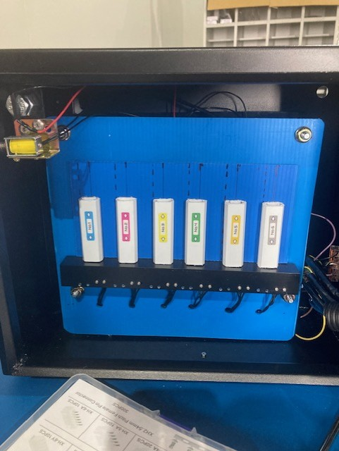
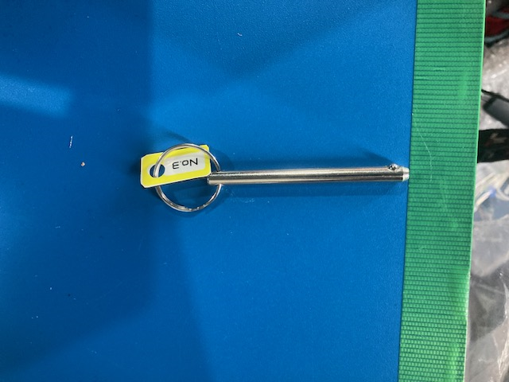
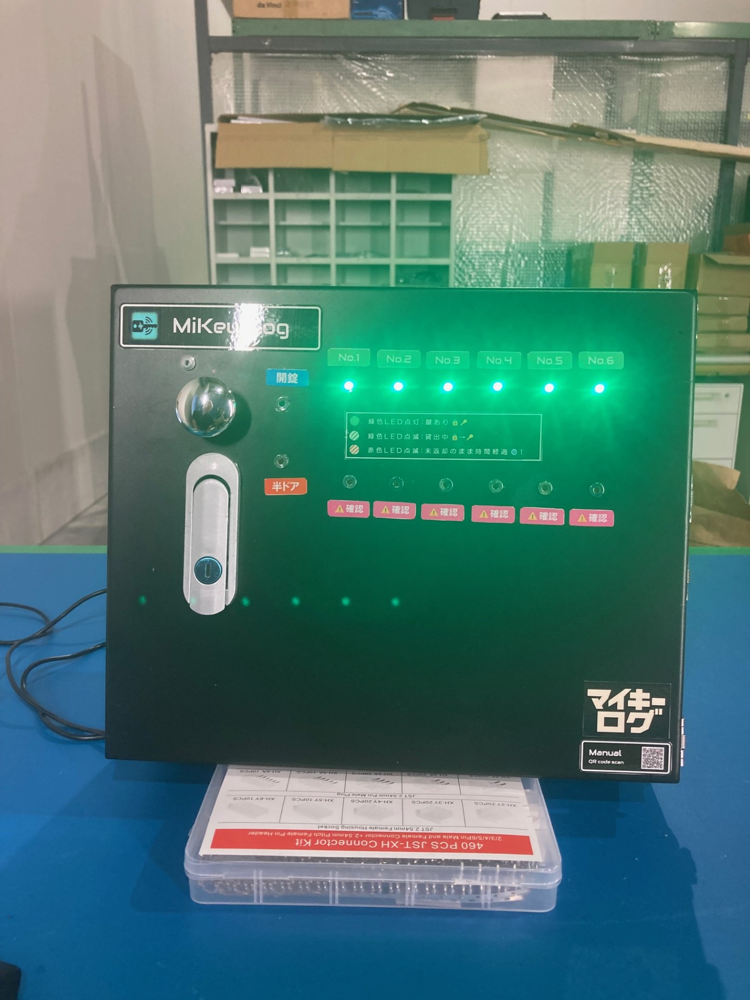

🗝️ MiKey Log System
〜 マイキーログの使い方 〜
🔊 画面のどこかをタップするか、下のボタンを押すと自動読み上げが始まります。
①QRコードをスキャンしよう！
キーボックス付近にあるPCに繋がれたQRコードリーダーに、事前に配布されたQRコードをかざして下さい。 （ヘルメットに貼り付けておくと便利です）
（ヘルメットに貼り付けておくと便利です）
キーボックス付近にあるPCに繋がれたQRコードリーダーに、事前に配布されたQRコードをかざして下さい。
（ヘルメットに貼り付けておくと便利です）
②PCに表示されている画面を確認して下さい。
正常なら画面が緑色、異常なら赤色に変化します。
画面が赤色になったり、警告音が鳴った場合には、QRコードを貸与された管理者へ御連絡下さい。
正常なら画面が緑色、異常なら赤色に変化します。

画面が緑色になったら、キーボックスからカチッと音が鳴り、開錠のLEDが緑色になります。
そうしたらキーボックスの鍵が外れますので、ツマミを持って扉を開き15秒以内に乗車したい番号の鍵が刺さっているピンを抜いて、手を放し扉を閉めて下さい。
もし扉が閉まりきらなかった場合は半ドアの赤色LEDが点滅しますので、
再度QRコードスキャンして開錠して再チャレンジしてみて下さい。画面が赤色になったり、警告音が鳴った場合には、QRコードを貸与された管理者へ御連絡下さい。
③鍵の取り出し方
乗車したい番号のキーホルダーが付いたピンを、上へ引き抜く感じで取り出して下さい。
乗車したい番号のキーホルダーが付いたピンを、上へ引き抜く感じで取り出して下さい。




④鍵の返却
開錠時同様にQRコードを読み取り開錠して、ピンを借りた時と同じ場所へカチッとなるまで差し込んで下さい。
15秒以内に鍵を戻し、扉から手を放し閉めて下さい。
時間内に戻せなかったら、再度QRコードを読み取る所からチャレンジしてみて下さい。
鍵を返却し扉を閉めて、鍵と同じ番号のLEDが緑色に点灯すれば、完了です。
尚、定められた時間内に鍵の返却が無かった場合は、該当番号の確認ランプが点滅し、確認者が声掛けを致します。
開錠時同様にQRコードを読み取り開錠して、ピンを借りた時と同じ場所へカチッとなるまで差し込んで下さい。
15秒以内に鍵を戻し、扉から手を放し閉めて下さい。
時間内に戻せなかったら、再度QRコードを読み取る所からチャレンジしてみて下さい。
鍵を返却し扉を閉めて、鍵と同じ番号のLEDが緑色に点灯すれば、完了です。

それ以外の反応見受けられた場合は、管理者へお問い合わせ下さい。尚、定められた時間内に鍵の返却が無かった場合は、該当番号の確認ランプが点滅し、確認者が声掛けを致します。
モノづくり工房